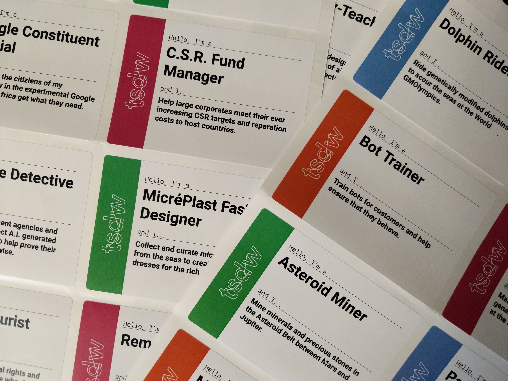
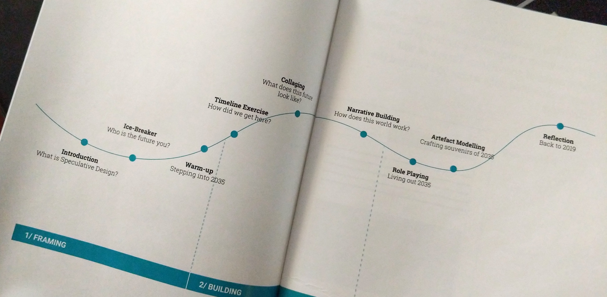
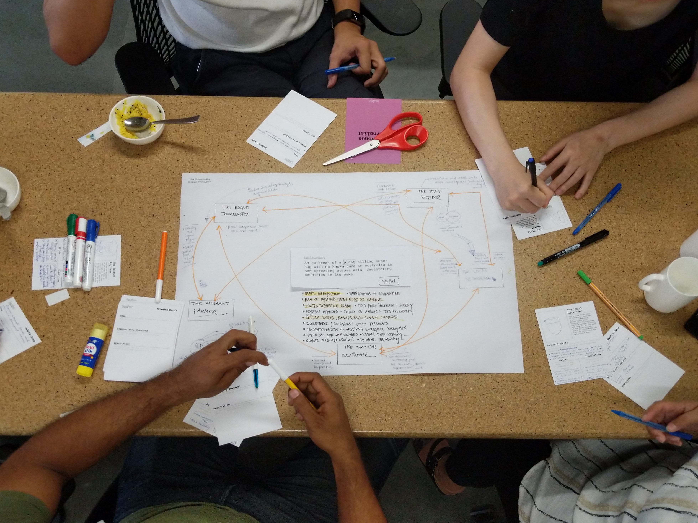
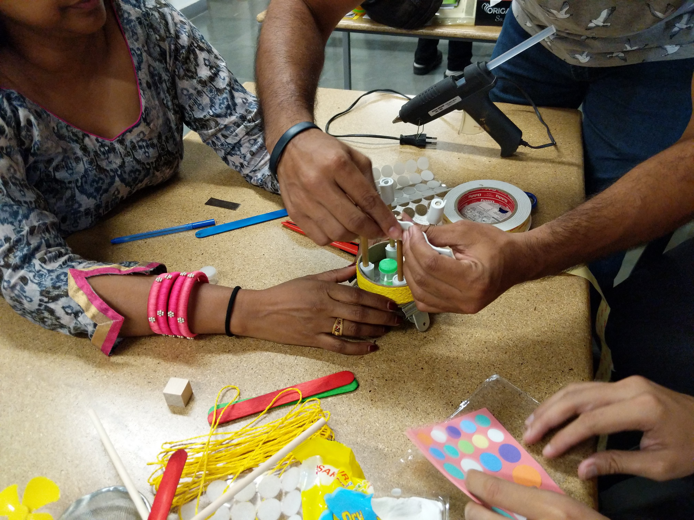
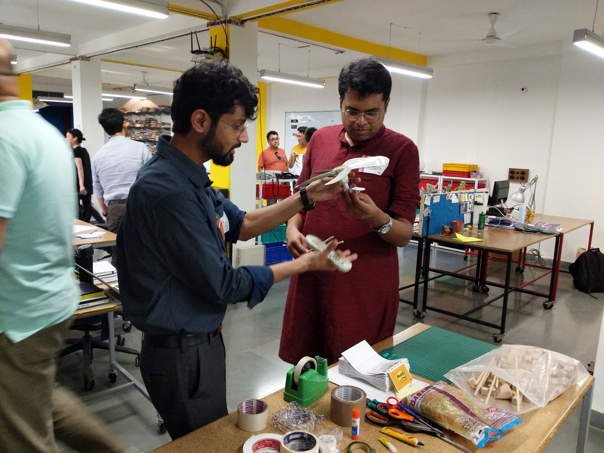

The Speculative Design Workshop
Overview
Helping Médecins Sans Frontières (MSF) to strategise and plan the future direction of the organisation using speculative design practices
Role
Designer and Facilitator
Client
Médecins Sans Frontières
For
Quicksand
The Speculative Design Workshop was a day of co-creation, where the participants were introduced to frameworks, toolkits, and theories from the world of speculative design. It was a way of looking at Médecins Sans Frontières (MSF)’s practice and the crises they aim to respond to through a fresh perspective, and reveal opportunities to critique, reshape, and innovate.

Introducing speculative design to the participants at the Quicksand Studio

Name tags for participants

Schedule of the workshop
Organised ahead of MSF Scientific Days in Delhi, 15 members of MSF from diverse backgrounds participated in a day-long workshop hosted at Quicksand Studio. The day began with participants playing fun games and opening up to thinking about the future. Through the day they spent time world-building and speculating how crises will evolve over the years, ending at present day: 2035. They detailed out their worlds through photo collaging and narrative writing exercises.

Speculating on the future of MSF by creating a timeline

A complete, populated timeline speculating the near, and far future. (they predicted the pandemic)
They engaged further with Speculative Design through role playing and artefact modelling activities, immersing into the worlds they built. The workshop came to an end with a sharing session where both the participants and the facilitators shared their reflections and discussed further steps for collaboration and a future for the workshop.

'Living' the future through role-playing based on MSF's predictions
The post-workshop discussions were lucid and free, as participants were able to look into the future and make confident decisions regarding the future of MSF as an organisation and the role they would play in the near future. It was unanimously acknowledged that the future of MSF was perhaps quite different from they thought it would be, prior to the workshop. This is exactly what The Speculative Design Workshop intended to do: allow participants to reflect on the present after having experienced the future. The workshop with it's format and branding was to be pitched to other organisations, to help teams strategise and prepare for the future.

'Prototyping solutions from role-playing activities
